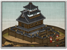

Requires
- Buildings:

Enables
- Buildings: 
Spawned Garrisons
- Units:

Basic Building Statistics (can be modified by difficulty level, arts, skills, traits and retainers)
- Cost: 3200
- Unlocks an additional construction slot
- Consumes food: 3
- Fortified defences (Fort)
Description
Walls are lessons in subjugation.
This solid structure can be garrisoned to defend a province and slow down invaders, even though it will not withstand a prolonged siege. No attacking general, however, would sensibly leave troops at his rear as he advances into enemy territory. A fort therefore costs time to reduce, a precious commodity in warfare. It also reminds the local peasantry of their overlord's power, and helps that lord recruit new troops. Early Japanese fortifications were usually very practical structures, made from wood and without layered defences of walls and towers. They were intended to draw in and delay attackers rather than withstand them. Early castles were located on rivers, at ports and at other important strategic chokepoints. The builders always took full advantage of the natural landscape: mountainous positions were favoured, and nearby streams were diverted to become as moats where possible. It was common for the defenders to not lurk behind their walls when attacked: the defenders would, more often than not, sally forth to meet the enemy rather than rely on the walls. If the attackers tried to bypass the castle, the defenders would not sit idly behind their walls, but would instead raid supply lines and harass the invaders until they either retreated, or decided to take the fort.